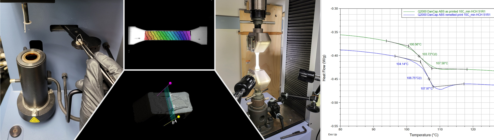
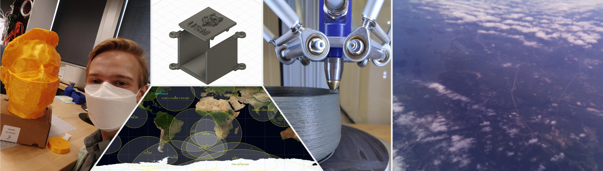
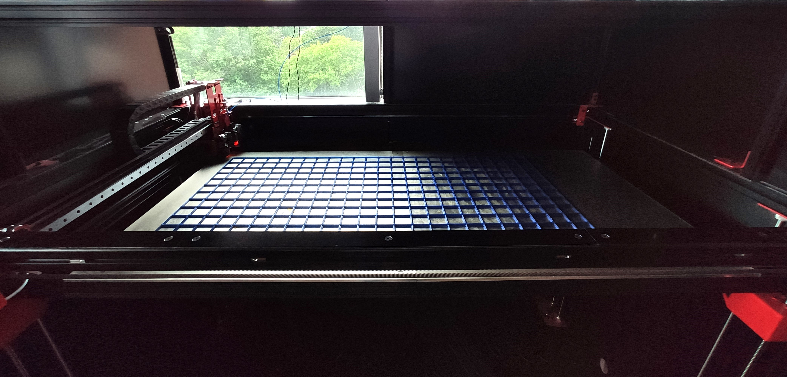
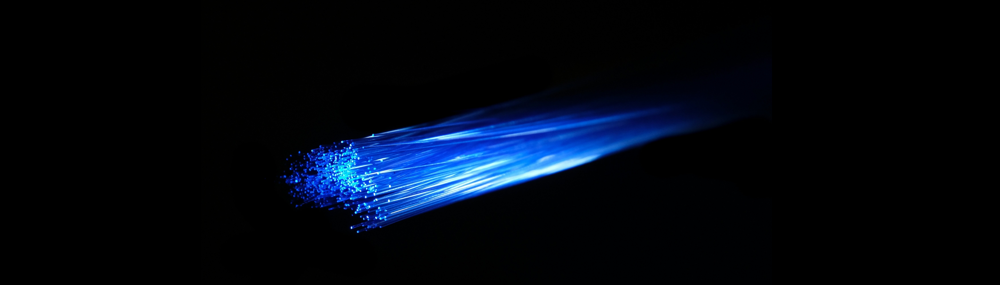

Composite Engineering Research Laboratory (CERL)

Intern/Student Lab Technician/Lab TA 2018-2023
Starting after my first year at Southern Maine Community College, CERL allowed me to expand my knowledge and skill
in composite manufacturing and polymer characterization. Manufacturing defect-free testing samples via vacuum infusion and CNC cutting,
mechanical testing per ASTM standards, Differential Scanning Calorimetry (DSC), Thermogravimetric Analysis (TGA), 3D microscopy, and Digital Image Correlation (DIC)
fell within my role at CERL. I also assisted in running lab sessions at CERL for composite engineering classes, and trained others in CERL's processes and equipment.
Maker Innovation Studio (MIST)

Student Lab Technician 2020-2022
My time at MIST incorporated too many individual skills to list here. As with CERL, I trained others on MIST equipment including 3D printers, CNC, and 3D CAD.
One of the most prominent responsibilities was maintaining/repairing/assembling 3D printers (see the section below for an example). This includes exotic material printers such as a clay 3D printer, high-temperature printers, resin printers, and continuous-fiber composite 3d printers.
I also designed the V1 and V2 CubeSat frames for the University of Southern Maine Cubesat Design Competition (UCDC) in 2021 and 2022, incorporating feedback from the V1 frames to design the V2 frames.
UCDC is a competition for middle and high schoolers to build cubesat (a 10cm X 10cm X 10cm satellite) simulator to be sent up on a weather balloon to simulate the conditions of space.
I also helped build MISTs cubesat simulators, assisted schools that needed advice or CAD work done to their satellites, and aided in the recovery of the fallen weather balloon by relaying it's live position.

This is the largest printer I've worked on,
1200mm x 600mm x 640mm!
You can see a few clips of this being built by my coworker and I in a news segment here.

Drafter 2023-Present
My work at Mountain has me making decisions on where to place telecommunications fiber optic cable, methods of placement, and placement of equipment. This includes making
decisions on aerial (telephone pole) fiber placement, necessary underground conduit sizes and count. I also decide sizes of telecommunication equipment such as hand holes, pedestals, and cabinets based on
splicing requirements, conduit requirements, and the number of facilities served if applicable. Through all of this national and local codes and ordinances must be followed, spanning several states and localities.
This includes special permitting for crossing oil pipelines, railroads, highways, or any other controlled right-of-way areas.
I unfortunately cannot share an example of my work for this section as it is critical infrastructure.